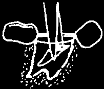
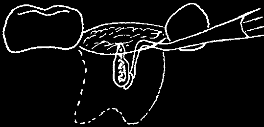
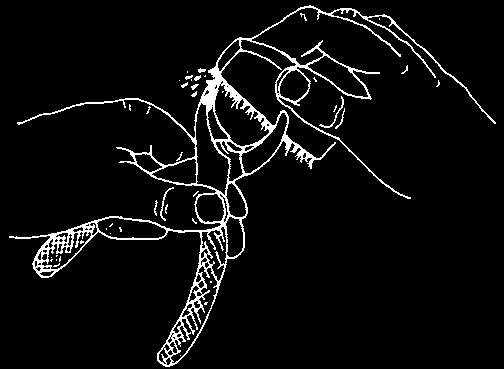
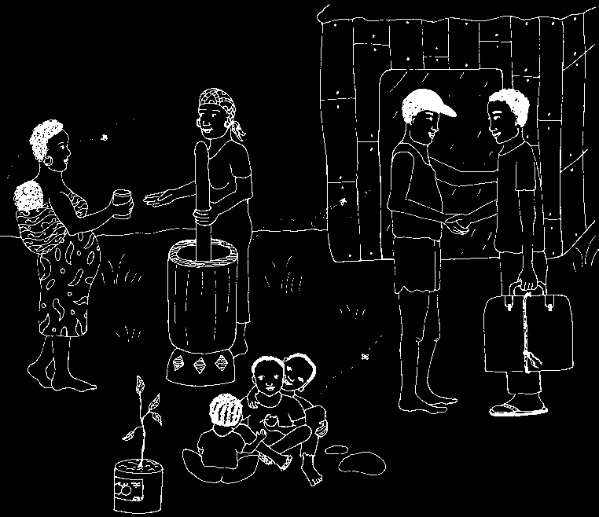
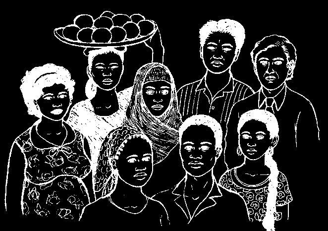

PROBLEMS THAT CAN OCCUR
Sometimes a problem develops even though you have tried to be careful.
Give help whenever you can. If you are not able to help, refer the person to a doctor or dentist as soon as possible.
BROKEN ROOTS
If you can see the root, try to remove it. If you leave a broken root inside the bone, it can start an infection.
Removing a broken UPPER root. Use your straight elevator. Slide the blade along the wall of the socket until it meets the broken root.
1. Force the blade between
2. Move the root away the root and the socket.
from the socket wall.
3. Move the root further
4. Grab the loose root and until it is loose.
pull it out.
Removing a broken LOWER root. Use a straight elevator (or a curved elevator if you have one). If the broken root is from a molar tooth, slide the blade into the socket beside the broken root.
1. Break away the bone between
2. Force the blade between the root and the blade.
the root and the socket.
3. Move the root away
4. Grab the loose root and from the socket wall.
pull it out.
WARNING: It is better to leave a small broken root inside the socket.
In a week or so, it will loosen itself and be easier to remove.

ROOT PUSHED INTO THE SINUS
An upper root that seems to disappear may have gone into the sinus (page
95). Do not try to find it. Instead, cover the socket with cotton gauze and send the person to the hospital. A special operation is needed to open the sinus, find the root, and take it out.
Ask the person not to blow his nose. That forces air through the opening and prevents it from healing.
BONE CHIPS AND TAGS OF FLESH
Small pieces of bone that lie loose inside the socket can cause bleeding and delay healing.
Gently reach into the socket with the end of an elevator or spoon instrument. Feel for the piece of bone and carefully lift it out.
Give local anesthetic if needed.
When you are finished, ask the person to bite on cotton gauze until the bleeding stops.
Small tags of flesh are not serious, but they bother the person. Hold the tag steady with cotton tweezers and use sterile scissors carefully to cut the bit of flesh free.
Rinsing with warm water makes gums tough and helps them heal. But do not rinse for the first 24 hours. See page 163.
BLEEDING
If the first cotton gauze (page 161) does not stop the bleeding in the socket, place more cotton gauze. Wait 5 minutes to see if the bleeding stops. If this does not work, follow the steps on pages 161–162 for placing a suture.
SWELLING
Hold a cloth wet with cold water against the face. This helps to prevent swelling. This is a good thing to do if the tooth was hard to take out, or if it took a long time.
If there already is swelling, heat against the face will help to reduce swelling. Hold a cloth wet with hot water against the swollen area, 30 minutes on and 30 minutes off. Be careful not to burn the skin!
A large swelling usually means there is an infection. The person needs additional treatment. See page 116.


PAINFUL SOCKET
The socket area often hurts for a day or so after the tooth has been removed. Aspirin or acetominophen (page 94) is usually enough to relieve the pain.
A strong, steady pain that lasts for several days is a sign that the person is having a problem called dry socket. The treatment for this special kind of problem is given on page 117.
DISLOCATED JAW
When you press against a person’s jaw while taking out a tooth you can sometimes dislocate it. The jaw has been pushed out of position and it is not able to go back again.
We describe the care for a dislocated jaw on page 113.
MOST IMPORTANT: Be sure to tell each person you treat, “If your problem gets worse, you can come back to see me immediately!”
CLEAN YOUR INSTRUMENTS AFTER YOU FINISH
If your instruments are dirty, they can pass on germs that cause tetanus
(page 118) or hepatitis (see page 172 in Where There is No Doctor).
Germs on dirty instruments can also go into the socket and start an infection.
Dental instruments must be not only clean, but also sterile. This means they need to be both scrubbed and then boiled before they can be used again.
See pages 86 to 89.
Use a brush and clean each
Then kill the germs by instrument with soap and water.
placing the instruments into
Be careful to scrub away all bits a covered pot of boiling of old dried blood.
water for 30 minutes.
HIV and Care
CHAPTER
of the Teeth and Gums
Many things in the world have changed since Where There Is No Dentist was first published in 1983. One of the most profound changes has been the spread of HIV and AIDS worldwide. Although millions of people are now infected with HIV, the illness is still surrounded by fear and disinformation.
This chapter explains HIV and AIDS, what they mean for people who are infected and for oral health workers, and how we can all work together to prevent the spread of HIV.
For people with HIV, good dental care can mean the difference between living and dying.
If a person with HIV has a clean and healthy mouth, he or she will be able to eat well, be stronger, feel better, and live longer.
Mary and David
Mary was 17 years old. She and her boyfriend David were expecting a baby.
David was Mary’s first boyfriend and he was very attentive and kind to her. But David had not been well lately. His mouth had been very sore and smelled bad all the time. Although he did not seem to have problems with his teeth, it was hard to chew or swallow, and white spots appeared on the roof of his mouth. Mary thought he should go to see the dental worker at the health center. At first David refused. He said he did not want to talk about it in a nervous voice. Finally David agreed to go if Mary would go too.
David said he wanted to see the dental worker by himself. So Mary sat in the waiting room while David saw the dental worker.

After a while the dental worker came out and asked Mary to come into the room. David was sitting on a chair looking worried. He tried to give Mary a smile, but she could see his heart was not in it. The dental worker asked
David if she could tell Mary what she had found in David’s mouth. David agreed, so the dental worker explained to Mary that David did not have any problems with his teeth. He had infections in his mouth, gums, and throat.
This was why his mouth was sore and smelled bad all the time.
The dental worker said she would give David the dental care he needed.
But she also said she thought David’s problem might be caused by a much more serious infection called HIV. That would explain why his body is weak and he is unable to fight off the infection in his mouth. But to be sure, David should get a blood test for HIV. And because HIV can be passed from one person to another she encouraged Mary to get tested too. She explained that the sooner you find out if you have HIV, the sooner you can start taking medicines that help you and your baby live long and healthy lives.
I can treat the
It would be good for you problem in David’s both to get tested so that mouth, but I think he if you have HIV you can has a serious infection.
protect youselves and your baby.
The right information will help dental workers give good dental care to everyone.
This story shows why it is important for dental workers to know about infections in the mouth that may be caused or made worse by HIV. With correct and up-to-date information, dental workers can give the good dental care everyone deserves, and can help prevent HIV from spreading to other people or to themselves.
Health and dental workers must give people with HIV the care they need. Make sure your health system provides the resources (equipment, medicines) you need to give good care.

WHAT ARE HIV AND AIDS?
HIV (Human Immunodeficiency Virus) is a germ that causes AIDS (Acquired
Immune Deficiency Syndrome) by weakening the immune system, the part of the body that fights off infection and disease.
A person is said to have AIDS when he or she starts to get many common health problems more often than usual and stays sick longer. Some of these problems are losing weight, sores that will not heal, a bad cough, sweating at night, diarrhea, skin rashes, a fever, or feeling very tired all the time.
Without treatment the immune system of a person with AIDS gets weaker and weaker and the person is less able to fight these health problems.
Most people with AIDS die from diseases their bodies are no longer strong enough to fight.
Many people who are infected with HIV do not get sick for several years.
This means that a person can be infected with HIV and not know they have it because they feel healthy. But HIV can be passed from one person to another as soon as a person is infected. So, the only way to know if you are infected is to take a blood test called an HIV test. This test can be done at many clinics, hospitals, and other locations.
Medicines called anti-retrovirals, or ARVs, can help people with HIV regain their health or stay healthy for many years.
ARVs can also help prevent the spread of HIV to a baby or to people who are exposed accidentally. ARVs cannot cure
HIV, however. So these medicines must be taken every day, for life.
Medicines for HIV are expensive, though people affected by HIV have organized to make them available in more countries and at lower prices. Many governments and organizations provide ARVs for free either through their own funding or with the support of international donors.
Talk to a health worker who has experience working with HIV to find out where to go for treatment for HIV.


HOW IS HIV SPREAD?
HIV lives in certain body fluids, such as blood, semen (sperm), and the fluids in the vagina. The virus is spread when these fluids get into the body of another person. This means that HIV can be spread by:
• having unsafe or risky sex with someone who has the virus
(see page 192).
• using injection needles or syringes that have not been sterilized
(see page 87).
• using dirty instruments that cut the skin for injecting drugs, scarring, piercing, circumcision, or dental care. Even if instruments have been washed and look very clean, they can still have germs on them and can spread HIV if they have not been sterilized (see page 87).
• touching or receiving the blood of an infected person.
• mother to child during pregnancy, birth, or breastfeeding.
• splashing of blood into the eyes or mouth.
HIV does not live outside the human body for more than a few minutes. It cannot live on its own in the air or in water.
This means you cannot give or get HIV from everyday contact, such as play, working with someone, shaking hands, sharing meals, or from spitting, sneezing, coughing, sweating, from tears, or from insect bites.
HIV is not spread by casual contact.


WHO GETS HIV?
Millions of people all over the world are infected with HIV. If the body is strong, the HIV virus can grow quietly for several years, slowly weakening the immune system before it turns into AIDS. If the body is weak, the diseases of AIDS may develop more quickly.
Both rich and poor people can be infected with HIV, but the sickness is worse for the poor. This is because poor people get more infections, which weaken the body, because they do not have access to:
• low-cost health care.
• enough nutritious food.
• clean, safe drinking water.
• safe, uncrowded living conditions.
• good sanitation.
Most mouth infections
Working to change these are not caused by conditions is an important
HIV, but all mouth infections are serious part of preventing the when a person is spread of HIV and infected with HIV.
improving the lives of people who have HIV.
HOW HIV AFFECTS THE MOUTH
People with HIV are likely to have more problems inside the mouth than people who do not have HIV. Because their bodies are weaker, any sores and infections may spread more quickly than they do for healthier people.
So people with HIV may need more regular and careful help from dental workers than other people in the community.
Most people with HIV will get at least one kind of infection or problem in the mouth at some time during their illness. If this is not treated, it can be painful, can affect how much food the person eats, and can cause more serious health problems.
Infections in the mouth related to HIV affect the soft skin (tissue)—the lips, the cheeks, the tongue, the lining of the roof of the mouth, under the tongue, and the skin around the teeth (the gums). HIV does not directly affect the teeth themselves. In the final stages of AIDS, the gums and the jaw bone, which hold the teeth in place, may be destroyed. Also, HIV can cause “dry mouth,” especially for people using ARVs (anti-retroviral drugs), which makes it easier to get cavities (tooth decay).

HOW TO EXAMINE THE MOUTH FOR SIGNS OF HIV OR AIDS
IMPORTANT: You cannot tell from looking at a person if he or she has HIV.
Dental workers must always be careful to make sure they do not pass the virus from one person to another during dental care.
Also, dental workers must protect themselves to make sure the virus does not pass to them from someone they are treating. So always use precautions against HIV infection with every person you see.
The best precautions are to always wear clean latex gloves or plastic bags on the hands, a face mask, eye protection, and to use only clean, sterile instruments. For information on how to clean and sterilize instruments, see pages 86 to 91.